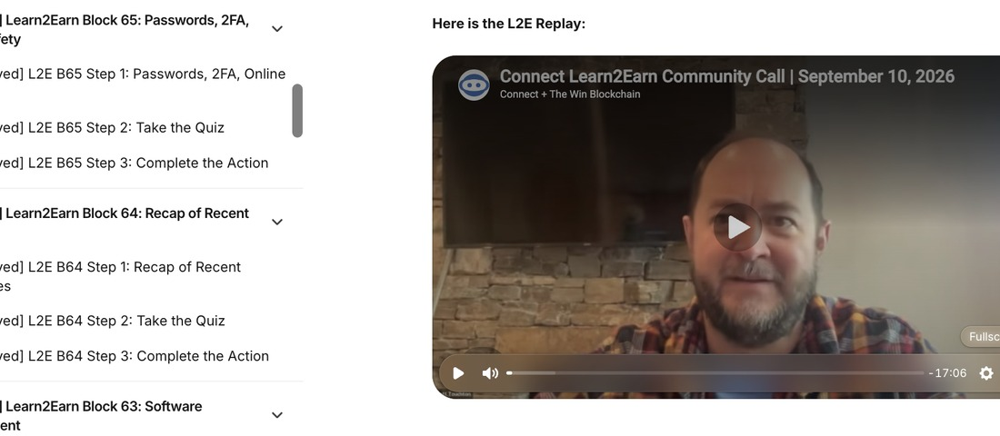

Client · Learn2EarnLive Training · Educational Programming · Community Building
Learn2Earn — Client Training & Education Program
Serving as the recurring on-camera host and content creator for a client's Learn2Earn program: a structured blockchain education series designed to onboard new users and drive adoption. Each block follows a lesson-quiz-action format, building from basics to practical use across the community.
On-Camera Host
Educational Content
Community Engagement
Live Training
Blockchain Adoption
65+
Episodes produced & hosted
170K+
Digital rewards earned by program participants